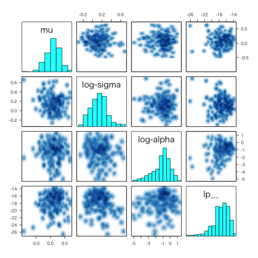

rstan: R Interface to Stan
StanのR実装
- CRAN: http://cran.r-project.org/web/packages/rstan/index.html
- GitHub: https://github.com/stan-dev/rstan
- URL: http://mc-stan.org
> library(rstan)
> # おまじない
> # rstan_options(auto_write = TRUE)
> options(mc.cores = parallel::detectCores())
バージョン: 2.8.1
| 関数名 | 概略 |
|---|---|
expose_stan_functions |
Expose user-defined Stan functions to R for testing and simulation |
extract-methods |
'extract': extract samples from fitted Stan model |
is.array.stanfit |
Create array, matrix, or data.frame objects from samples in a 'stanfit' object |
log_prob-methods |
model's 'log_prob' and 'grad_log_prob' functions |
lookup |
Look up the Stan function that corresponds to a R function or name. |
makeconf_path |
Obtain the full path of file 'Makeconf' |
monitor |
Compute the summary for MCMC simulation samples and monitor the convergence |
optimizing-methods |
'optimizing': obtain a point estimate by maximizing the joint posterior |
pairs.stanfit |
Create a matrix of output plots from a 'stanfit' object |
plot-methods |
'plot': plot an overview of summaries for the fitted model |
print.stanfit |
Print a summary for a fitted model represented by a 'stanfit' object |
read_rdump |
Read data in an R dump file to a list |
read_stan_csv |
Read CSV files of samples generated by (R)Stan into a 'stanfit' object |
rstan-package |
RStan - R interface to Stan |
rstan_options |
Set and read options used in RStan |
sampling-methods |
'sampling': draw samples from Stan model |
set_cppo |
Defunct function to set the compiler optimization level |
sflist2stanfit |
Merge a list of stanfit objects into one |
stan |
Fit a model using Stan |
stan_demo |
Demonstrate examples included in Stan |
stan_model |
Construct a Stan model |
stan_rdump |
Dump the data for a Stan model to R dump file in the limited format that Stan can read. |
stan_version |
Obtain the version of Stan |
stanc |
Translate Stan model specification to C++ code |
stanfit-class |
Class 'stanfit': fitted Stan model |
stanmodel-class |
Class representing model compiled from C++ |
traceplot |
'traceplot': draw the traces of the sample |
extract-methods
サンプルされたパラメータの抽出
Arguments
- object... 対象のstanfitクラスオブジェクト
- pars... 抽出したいパラメータ（任意）
- permuted
- inc_warmup
- include
> fit1 <- stan_demo("dogs")
> mod_params <- rstan::extract(fit1)
> mod_params %>% {
+ print(class(.))
+ str(., max.level = 2)
+ }
> # [1] "list"
> # List of 5
> # $ beta : num [1:4000, 1:3] 1.83 1.54 1.48 1.74 1.45 ...
> # ..- attr(*, "dimnames")=List of 2
> # $ n_avoid: num [1:4000, 1:31, 1:25] 0 0 0 0 0 0 0 0 0 0 ...
> # ..- attr(*, "dimnames")=List of 3
> # $ n_shock: num [1:4000, 1:31, 1:25] 0 0 0 0 0 0 0 0 0 0 ...
> # ..- attr(*, "dimnames")=List of 3
> # $ p : num [1:4000, 1:31, 1:25] 1.83 1.54 1.48 1.74 1.45 ...
> # ..- attr(*, "dimnames")=List of 3
> # $ lp__ : num [1:4000(1d)] -294 -292 -293 -296 -294 ...
> # ..- attr(*, "dimnames")=List of 1
> mean(mod_params$beta)
> # [1] 0.3397949
lookup
R関数などのStanでの表記とその引数や返り値を返す
Arguments
- FUN... Rの関数やStanでの関数名
- ReturnType
> lookup(FUN = dnorm)
StanFunction Arguments ReturnType Page
344 normal (reals mu, reals sigma) real 369
348 normal_log (reals y, reals mu, reals sigma) real 369
SamplingStatement
344 TRUE
348 FALSE
> lookup("lognormal")
StanFunction Arguments ReturnType Page
248 lognormal (reals mu, reals sigma) real 377
249 lognormal_ccdf_log (reals y, reals mu, reals sigma) real 377
250 lognormal_cdf (reals y, reals mu, reals sigma) real 377
251 lognormal_cdf_log (reals y, reals mu, reals sigma) real 377
252 lognormal_log (reals y, reals mu, reals sigma) real 377
253 lognormal_rng (real mu, real beta) real 377
SamplingStatement
248 TRUE
249 FALSE
250 FALSE
251 FALSE
252 FALSE
253 FALSE
> lookup("^poisson", ReturnType = "int") %>% head()
StanFunction Arguments ReturnType Page
1 abs (int x) int 295
27 bernoulli_rng (real theta) int 354
36 beta_binomial_rng (int N, real alpha, real beta) int 359
51 binomial_rng (int N, real theta) int 357
57 categorical_rng (vector theta) int 360
74 cols (matrix x) int 325
SamplingStatement
1 FALSE
27 FALSE
36 FALSE
51 FALSE
57 FALSE
74 FALSE
monitor
MCMCによる計算結果の表示
Arguments
- sims
- warmup
- probs
- digits_summary
- ...
> csvfiles <- dir(system.file('misc', package = 'rstan'),
+ pattern = 'rstan_doc_ex_[0-9].csv', full.names = TRUE)
> fit <- read_stan_csv(csvfiles)
> extract(fit, permuted = FALSE, inc_warmup = TRUE) %>% monitor()
Error: Please supply column name
pairs.stanfit
> example(read_stan_csv)
> pairs(fit, pars = c("mu", "sigma", "alpha", "lp__"), log = TRUE, las = 1)

plot-methods
read_stan_csv
(R)Stanによる実行結果を保存したCSVファイルをstanfitオブジェクトとして出力する
Arguments
- csvfiles
- col_major
> system.file('misc', package = 'rstan') %>%
+ dir(pattern = 'rstan_doc_ex_[0-9].csv', full.names = TRUE) %>%
+ read_stan_csv()
Inference for Stan model: rstan_doc_ex.
4 chains, each with iter=200; warmup=100; thin=1;
post-warmup draws per chain=100, total post-warmup draws=400.
mean se_mean sd 2.5% 25% 50% 75% 97.5% n_eff Rhat
mu 0.09 0.01 0.23 -0.38 -0.05 0.11 0.25 0.56 334 1.00
sigma 1.16 0.02 0.21 0.86 1.02 1.14 1.28 1.74 183 1.00
z[1,1] 0.00 0.05 0.92 -1.81 -0.65 -0.01 0.71 1.59 285 1.01
z[1,2] 0.01 0.06 1.03 -2.04 -0.66 0.05 0.67 1.99 269 1.00
z[2,1] 0.10 0.06 0.98 -1.71 -0.55 0.08 0.76 1.98 286 1.00
z[2,2] 0.04 0.05 0.95 -1.85 -0.68 0.07 0.72 1.73 400 1.00
z[3,1] -0.06 0.05 1.07 -2.08 -0.81 -0.11 0.68 1.93 400 1.00
z[3,2] 0.12 0.06 1.04 -1.74 -0.51 0.08 0.77 2.16 310 1.00
alpha 0.53 0.03 0.53 0.01 0.18 0.39 0.69 2.07 400 0.99
lp__ -17.47 0.20 2.26 -23.33 -18.68 -17.21 -15.76 -14.29 130 1.02
Samples were drawn using NUTS(diag_e) at Fri Nov 20 15:07:35 2015.
For each parameter, n_eff is a crude measure of effective sample size,
and Rhat is the potential scale reduction factor on split chains (at
convergence, Rhat=1).
rstan_options
RStan実行時の設定オプションを指定（文字列として与える）。指定可能なオプションには以下のものがある。
- plot_rhat_breaks
- plot_rhat_cols
- plot_rhat_nan_col
- plot_rhat_large_col
- rstan_alert_col
- rstan_chain_cols
- rstan_warmup_bg_col
- boost_lib
- eigen_lib
- auto_write... 初期値はFALSE。
> rstan_options(...)
sampling
サンプリングを実行。あらかじめ、コンパイルされたstanモデルが必要。
Arguments
- object
- data... list
- pars
- chains... 初期値は４
- iter... 初期値は2000
- warmup
- thin... 初期値は１
- seed... 乱数の設定
- init
- check_data
- sample_file
- diagnostic_file
- verbose
- algorithm...
NUTS,HMC,Fixed_param - control
- include
- cores...
getOption("mc.cores", 1L) - open_progress
- show_messages
> model <- stan_model(model_code = 'parameters {real y;} model {y ~ normal(0,1);}')
> sampling(model, iter = 100)
SAMPLING FOR MODEL 'a4ac6057f98b19ab6241bf06f3c8ead7' NOW (CHAIN 1).
Chain 1, Iteration: 1 / 100 [ 1%] (Warmup)
Chain 1, Iteration: 10 / 100 [ 10%] (Warmup)
Chain 1, Iteration: 20 / 100 [ 20%] (Warmup)
Chain 1, Iteration: 30 / 100 [ 30%] (Warmup)
Chain 1, Iteration: 40 / 100 [ 40%] (Warmup)
Chain 1, Iteration: 50 / 100 [ 50%] (Warmup)
Chain 1, Iteration: 51 / 100 [ 51%] (Sampling)
Chain 1, Iteration: 60 / 100 [ 60%] (Sampling)
Chain 1, Iteration: 70 / 100 [ 70%] (Sampling)
Chain 1, Iteration: 80 / 100 [ 80%] (Sampling)
Chain 1, Iteration: 90 / 100 [ 90%] (Sampling)
Chain 1, Iteration: 100 / 100 [100%] (Sampling)
# Elapsed Time: 0.00258 seconds (Warm-up)
# 0.002079 seconds (Sampling)
# 0.004659 seconds (Total)
SAMPLING FOR MODEL 'a4ac6057f98b19ab6241bf06f3c8ead7' NOW (CHAIN 2).
Chain 2, Iteration: 1 / 100 [ 1%] (Warmup)
Chain 2, Iteration: 10 / 100 [ 10%] (Warmup)
Chain 2, Iteration: 20 / 100 [ 20%] (Warmup)
Chain 2, Iteration: 30 / 100 [ 30%] (Warmup)
Chain 2, Iteration: 40 / 100 [ 40%] (Warmup)
Chain 2, Iteration: 50 / 100 [ 50%] (Warmup)
Chain 2, Iteration: 51 / 100 [ 51%] (Sampling)
Chain 2, Iteration: 60 / 100 [ 60%] (Sampling)
Chain 2, Iteration: 70 / 100 [ 70%] (Sampling)
Chain 2, Iteration: 80 / 100 [ 80%] (Sampling)
Chain 2, Iteration: 90 / 100 [ 90%] (Sampling)
Chain 2, Iteration: 100 / 100 [100%] (Sampling)
# Elapsed Time: 0.002031 seconds (Warm-up)
# 0.002263 seconds (Sampling)
# 0.004294 seconds (Total)
SAMPLING FOR MODEL 'a4ac6057f98b19ab6241bf06f3c8ead7' NOW (CHAIN 3).
Chain 3, Iteration: 1 / 100 [ 1%] (Warmup)
Chain 3, Iteration: 10 / 100 [ 10%] (Warmup)
Chain 3, Iteration: 20 / 100 [ 20%] (Warmup)
Chain 3, Iteration: 30 / 100 [ 30%] (Warmup)
Chain 3, Iteration: 40 / 100 [ 40%] (Warmup)
Chain 3, Iteration: 50 / 100 [ 50%] (Warmup)
Chain 3, Iteration: 51 / 100 [ 51%] (Sampling)
Chain 3, Iteration: 60 / 100 [ 60%] (Sampling)
Chain 3, Iteration: 70 / 100 [ 70%] (Sampling)
Chain 3, Iteration: 80 / 100 [ 80%] (Sampling)
Chain 3, Iteration: 90 / 100 [ 90%] (Sampling)
Chain 3, Iteration: 100 / 100 [100%] (Sampling)
# Elapsed Time: 0.003275 seconds (Warm-up)
# 0.002045 seconds (Sampling)
# 0.00532 seconds (Total)
SAMPLING FOR MODEL 'a4ac6057f98b19ab6241bf06f3c8ead7' NOW (CHAIN 4).
Chain 4, Iteration: 1 / 100 [ 1%] (Warmup)
Chain 4, Iteration: 10 / 100 [ 10%] (Warmup)
Chain 4, Iteration: 20 / 100 [ 20%] (Warmup)
Chain 4, Iteration: 30 / 100 [ 30%] (Warmup)
Chain 4, Iteration: 40 / 100 [ 40%] (Warmup)
Chain 4, Iteration: 50 / 100 [ 50%] (Warmup)
Chain 4, Iteration: 51 / 100 [ 51%] (Sampling)
Chain 4, Iteration: 60 / 100 [ 60%] (Sampling)
Chain 4, Iteration: 70 / 100 [ 70%] (Sampling)
Chain 4, Iteration: 80 / 100 [ 80%] (Sampling)
Chain 4, Iteration: 90 / 100 [ 90%] (Sampling)
Chain 4, Iteration: 100 / 100 [100%] (Sampling)
# Elapsed Time: 0.00206 seconds (Warm-up)
# 0.002078 seconds (Sampling)
# 0.004138 seconds (Total)
Inference for Stan model: a4ac6057f98b19ab6241bf06f3c8ead7.
4 chains, each with iter=100; warmup=50; thin=1;
post-warmup draws per chain=50, total post-warmup draws=200.
mean se_mean sd 2.5% 25% 50% 75% 97.5% n_eff Rhat
y -0.09 0.21 1.03 -2.06 -0.78 -0.08 0.70 1.75 24 1.13
lp__ -0.53 0.08 0.73 -2.66 -0.67 -0.28 -0.05 0.00 89 1.02
Samples were drawn using NUTS(diag_e) at Thu Oct 29 01:43:53 2015.
For each parameter, n_eff is a crude measure of effective sample size,
and Rhat is the potential scale reduction factor on split chains (at
convergence, Rhat=1).
stan
Stanによる統計モデリングの当てはめ
Arguments
- file
- model_name
- model_code
- fit
- data
- pars
- chains
- iter
- warmup
- thin
- init
- seed
- algorithm
- sample_file
- diagnostic_file
- save_dso
- verbode
- control
- include
- cores
- open_progress
- ...
- boost_lib
- eigen_lib
> scode <- "
+ parameters {
+ real y[2];
+ }
+ model {
+ y[1] ~ normal(0, 1);
+ y[2] ~ double_exponential(0, 2);
+ }
+ "
> fit1 <- stan(model_code = scode, iter = 10, verbose = FALSE)
stan_demo
Stanモデルのデモンストレーションをインタラクティブに実行
Arguments
- model
- method
- ...
> dogs <- stan_demo("dogs")
> # はじめに実行した際は、デモ用のファイルをダウンロードするか、
> # 一時フォルダに残すか、保存しないかの選択を行う
> # ２回目以降はモデルを選択する
> dogs
> # 一覧の表示
> # ref) https://github.com/stan-dev/rstan/wiki/Example-Models
> gsub(".stan$", "", basename(stan_demo(0)))
stanfit-class
Stanによる計算の実行結果を保存するオブジェクトクラス
> showClass("stanfit")
Class "stanfit" [package "rstan"]
Slots:
Name: model_name model_pars par_dims mode sim
Class: character character list integer list
Name: inits stan_args stanmodel date .MISC
Class: list list stanmodel character environment
> # get_posterior_mean()
> # get_elapsed_time()
> # get_stancode()
> # get_cppo_mode()
> # get_stanmodel()
> # get_inits()
> # get_seed(); get_seeds()
> # get_logposterior()
> # get_adaptation_info()
> # get_sampler_params()
> # get_num_upars()
stan_model
モデルの構築
> stan_model(model_code = 'parameters {real y;} model {y ~ normal(0,1);}')
stanmodel-class
> showClass("stanmodel")
Class "stanmodel" [package "rstan"]
Slots:
Name: model_name model_code model_cpp mk_cppmodule dso
Class: character character list function cxxdso
stan_dens
stan_version
インストールされているStanのバージョンを返す
> stan_version()
[1] "2.8.0"
traceplot
> exfit <- read_stan_csv(dir(system.file('misc', package = 'rstan'),
+ pattern='rstan_doc_ex_[[:digit:]].csv',
+ full.names = TRUE))
> traceplot(exfit)